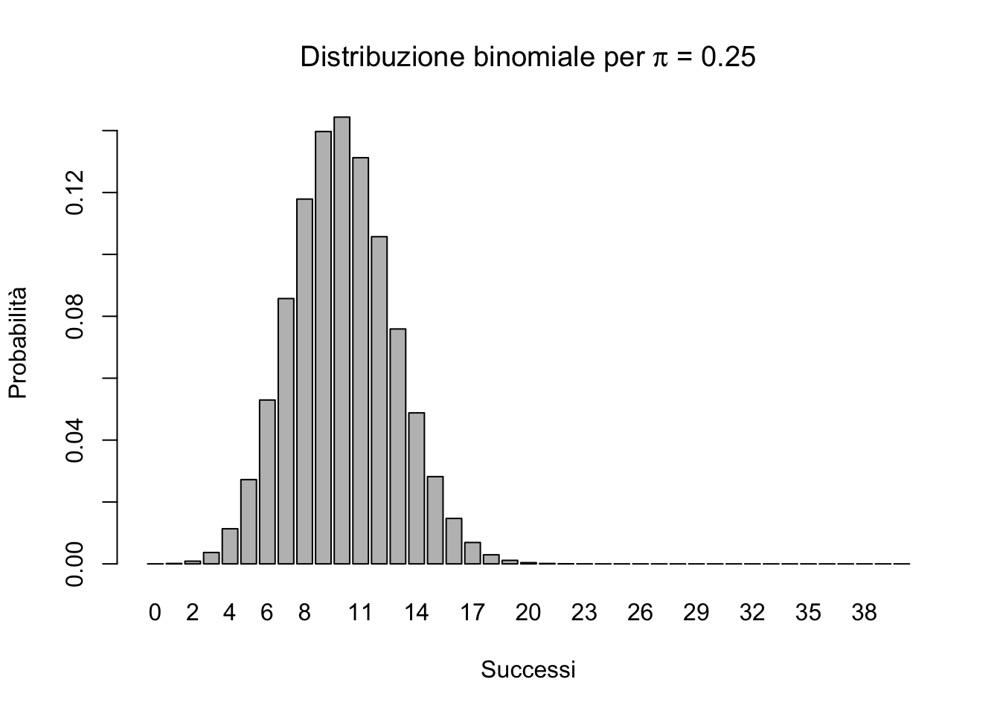
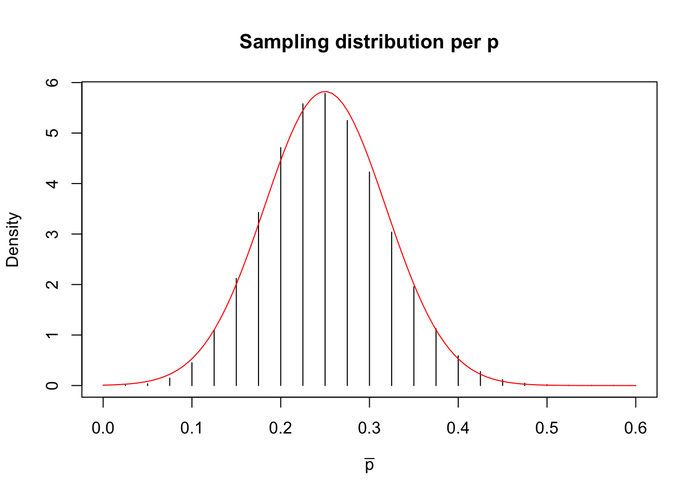
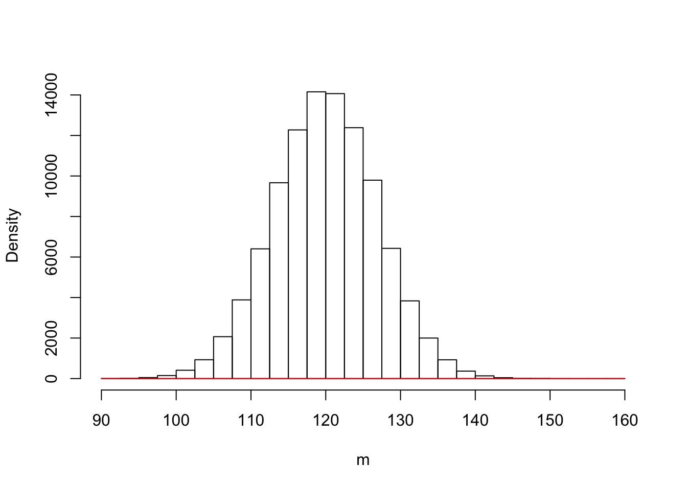
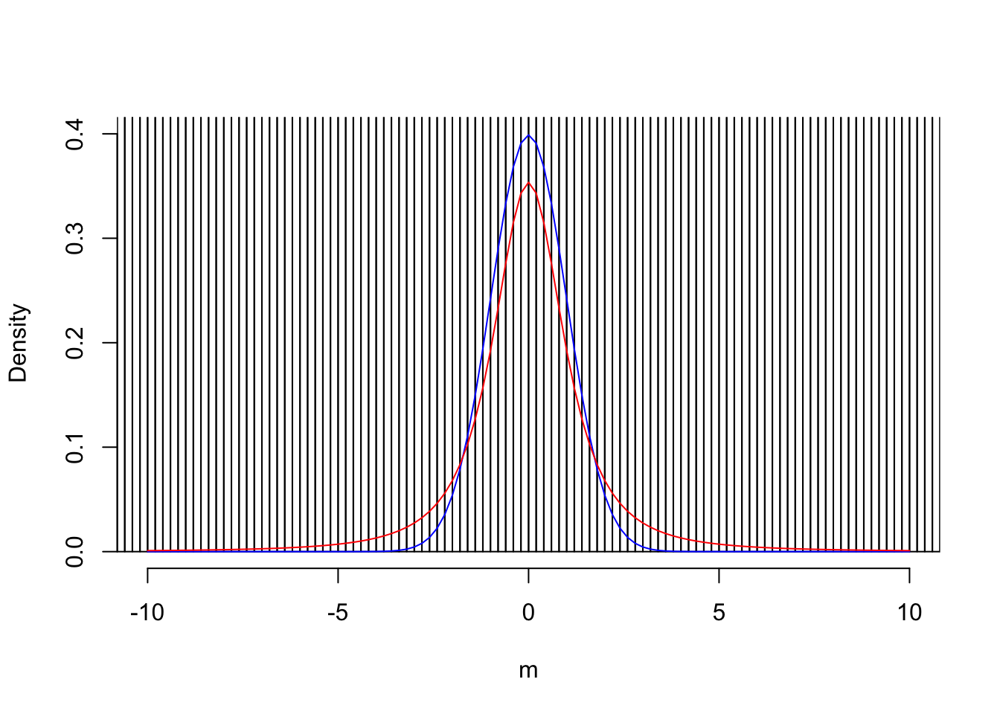

Capitolo 7 Modellizzare l’errore sperimentale: introduzione all’inferenza statistica
7.1 Introduzione
L’attività sperimentale in ambito scientifico/sociale e, in generale, nelle scienze della vita è condizionata dalla presenza di una componente stocastica, imprevedibile, che va sotto il nome generico di ’errore sperimentale’. Uno dei più influenziali scienziati che si sono confrontati con questo problema è Ronald Fisher (1890-1962), che nel suo famoso testo “Il disegno degli esperimenti” (1935, con seconda edizione nel 1937) ha posto le basi per una corretta metodica sperimentale, volta a minimizzare l’errore sperimentale e, soprattutto, ad impedire che gli effetti da esso prodotti potessero confondersi con gli effetti dei fenomeni scientifici in studio.
Era tuttavia evidente, già in quel testo, come un accurato disegno sperimentale è un presupposto necessario, ma non sufficiente per ottenere prove scientifiche attendibili. Infatti, i fenomeni scientifici sono sempre estremamente complessi e sfaccettati e manifestano i loro effetti su un universo di soggetti e situazioni sperimentali altamente variabili, che possono essere studiate solo attraverso un processo di campionamento. In questo modo, dall’universo di varianti possibili, posso ottenere un campione di dimensione sufficientemente piccola da poter essere studiato agevolmente. Anche se il campione è effettivamente rappresentativo, rimane il fatto che esso rappresenta il risultato di uno solo degli infiniti sforzi di campionamento possibili, con l’importante conseguenza che la ripetizione di un esperimento porta sempre a risultati più o meno diversi, perché diversi sono i soggetti e, spesso, anche le condizioni in cui l’esperimento viene eseguito.
Insomma, abbiamo studiato un campione di soggetti sperimentali, ma il nostro interesse è fondamentalmente rivolto verso la popolazione che ha generato il campione. Ci si deve allora chiedere quale sia la relazione tra l’esperimento da noi eseguito e la realtà scientifica o meglio quale sia la relazione tra le caratteristiche del campione e quelle della popolazione da cui esso è estratto. Questo processo logico prende il nome di inferenza statistica e può essere condotto secondo le teorie di Karl Pearson (1857-1936), Egon Pearson (suo figlio: 1895-1980) e Jarzy Neyman (1894-1981), oltre a Ronald Fisher.
7.2 L’analisi dei dati: gli ’ingredienti’ fondamentali
Nell’analisi dei dati si segue in genere un percorso logico che può essere così sintetizzato:
- PRESUPPOSTO: I fenomeni biologici seguono una legge di natura (verità ’vera’), che ne costituisce il meccanismo fondamentale.
- Quando si organizza un esperimento, i soggetti sperimentali obbediscono a questo meccanismo di fondo, al quale tuttavia si sovrappongono molto altri elementi di ’confusione’, altamente incontrollabili, che vanno sotto il nome di errore sperimentale.
- L’osservazione sperimentale è quindi un’immagine confusa della verità vera e, soprattutto, l’osservazione sperimentale tende ad essere diversa per ogni sforzo di campionamento.
- Compito del ricercatore è quello di separare l’informazione (che rappresenta la verità ’vera’) dal ’rumore di fondo’ provocato dall’errore sperimentale.
Questo dualismo tra verità ’vera’ (inconoscibile) e verità sperimentale (esplorabile tramite un esperimento opportunamente pianificato) è l’aspetto centrale di tutta la biometria ed è schematizzato nella figura seguente.
Osservazioni sperimentali e meccanismi perturbativi
Osservazioni sperimentali e meccanismi perturbativi
In semplici termini algebrici, la questione può essere illustrata in questo modo:
\[Y_t = f(X)\]
La verità ’vera’ (\(Y_T\)) segue un modello deterministico (relazione causa-effetto), per il quale essa è funzione dello stimolo. Quando impostiamo un esperimento per investigare questa relazione causale, l’errore sperimentale non permette di osservare esattamente \(Y_T\), ma ci fornisce invece \(Y_o\), il cui valore cambia quando ripetiamo l’esperimento. Di conseguenza possiamo utilizzare un modello stocastico \(\Phi\) per assegnare valori di probabilità ad ogni ’outcome’ \(Y_o\):
\[Y_o \sim \Phi(Y_T)\]
A questo punto \(Y_T\) diviene il valore atteso del modello stocastico, cioè l’output che tende a realizzarsi nel lungo periodo.
7.3 Modello della realtà e ’sampling space’
Nel percorso logico precedentemente indicato ci sono due aspetti fondamentali che debbono essere attentamente valutati:
- modello di generazione dei dati sperimentali;
- sampling distribution (o sample space).
Chiariamo i due concetti con un esempio.
7.4 Esempio 1
7.4.0.1 Background
Immaginiamo di avere 4’000’000 di semi ben mischiati (in modo che non ci siano raggruppamenti non casuali di qualche tipo), che costituiscono la nostra popolazione di partenza.
7.4.0.2 Obiettivo
Vogliamo appurare la frequenza relativa (p) dei semi dormienti. Questa informazione, nella realtà, esiste (\(\pi\) = 0.25), ma non è nota.
7.4.0.3 Materiali e metodi
Dato l’elevato numero di ’soggetti’, non possiamo saggiare la germinabilità di tutti i semi, ma dobbiamo necessariamente prelevare un campione casuale di 40 soggetti; ogni seme viene saggiato e, dato che la popolazione è molto numerosa, l’estrazione di un seme non modifica sensibilmente la proporzione di quelli dormienti nella popolazione (esperimenti indipendenti).
7.4.0.4 Risultati
Il risultato dell’esperimento è: nove semi dormienti su 40 (9 successi su 40 estrazioni).
7.4.0.5 Analisi dei dati
Dopo aver descritto la popolazione e l’esperimento, ci chiediamo quale sia il modello matematico che genera i nostri dati (numero di successi su 40 semi estratti). Il disegno sperimentale ci assicura che ogni estrazione è totalmente indipendente dalla precedente e dalla successiva ed ha due soli risultati possibili, cioè successo (seme dormiente), o insuccesso (seme germinabile). Di conseguenza, ogni singola estrazione si configura come un esperimento Bernoulliano, con probabilità di successo pari a \(\pi\), il cui valore ’vero’ esiste, è fisso, pre-determinato (esiste ancor prima di organizzare l’esperimento), anche se incognito e inconoscibile, a meno di non voler/poter esaminare tutti i semi disponibili. L’insieme delle 40 estrazioni (40 esperimenti Bernoulliani) può produrre un ventaglio di risultati possibili, da 40 successi a 40 insuccessi, per un totale di 41 possibili ’outcomes’.
E’ evidente che i 41 possibili risultati non sono ugualmente probabili e si può dimostrare che la probabilità di ottenere k successi (con k che va da 0 ad n; n è al numero delle estrazioni) dipende da \(\pi\) ed è descrivibile matematicamente con la distribuzione binomiale \(\phi\):
\[\phi(k, n, p) = \frac{n!}{(n-k)!k!} p^k (1 - p)^{(n-k)}\]
Abbiamo quindi definito il modello matematico che descrive la probabilità di tutti i possibili risultati del nostro esperimento e quindi può in qualche modo essere considerato il ’meccanismo’ che ’genera’ i dati sperimentali osservati. Si tratta di un meccanismo puramente ’stocastico’ nel quale è solo il caso che, attraverso il campionamento, determina il risultato dell’esperimento.
7.4.0.6 Stima dei parametri
Dovendo stimare la quantità \(\pi\), la statistica tradizionale trascura totalmente le nostre aspettative sul fenomeno e utilizza soltanto i risultati dell’esperimento. Chiamiamo p la quantità stimata e, dato che abbiamo contato nove semi dormienti, concludiamo che p = 0.225, in quanto questa è la cosa più verosimile (maximum likelihood). Infatti, la probabilità di ottenere 9 successi su 40 estrazioni partendo da una distribuzione binomiale con p = 0.225 è pari a 0.1496, mentre, ad esempio, le probabilità di ottenere sempre 9 successi a partire da popolazioni binomiali rispettivamente con p=0.235 o p=0.215 sono più basse, come è possibile verificare utilizzando il software statistico R (R Core Team, 2015) e la funzione dbinom(k, n, p).
dbinom(9, 40, 0.225)## [1] 0.1495739dbinom(9, 40, 0.235)## [1] 0.1479025dbinom(9, 40, 0.215)## [1] 0.1478311Si osserva una chiara discrasia tra la verità ’vera’ e l’osservazione sperimentale (tra \(\pi\) e \(p\)), nel senso che il risultato dell’esperimento non riflette esattamente la realtà. Anche se questa discrasia non è normalmente evidente (perché la verità vera è ignota), non può in nessun modo essere trascurata o meglio, non ci si può mai comportare come se essa non esistesse!
INSOMMA: l’incertezza è un componente inerente della scienza!
7.4.1 Sampling distribution
Abbiamo individuato il modello che ha generato le osservazioni (9 successi su 40 estrazioni), ma è evidente che la natura stocastica di questo modello fa si che l’eventuale ripetizione dell’esperimento potrebbe portare ad ottenere un valore di p diverso. Infatti, se \(\pi\) è uguale a 0.25, trovare 10 successi su 40 è la situazione più probabile, ma sono possibili anche altri risultati, seppur meno probabili, come indicato nella figura seguente.
#Distribuzione binomiale
barplot(dbinom(seq(0, 40, by=1), size=40, prob=0.25),
main=expression(paste("Distribuzione binomiale per ",
pi, " = 0.25", sep="")),
xlab="Successi", ylab="Probabilità",
names.arg=seq(0,40))
La ripetizione dell’esperimento può essere simulata (simulazione Monte Carlo) ricorrendo ad un generatore di numeri casuali da una distribuzione binomiale con n = 40 e \(\pi\) = 0.25 (in R si usa la funzione rbinom(numeroDatiCasuali, n, p)):
set.seed(1234)
rbinom(1, 40, 0.25)## [1] 11In questo caso il generatore casuale ha prodotto 7 successi, ma ripetendo ancora otteniamo risultati diversi. Trattandosi di un esperimento Monte Carlo, non ci sono problemi a ripeterlo un numero molto alto di volte (es. 10’000’000), ottenendo così una ’popolazione’ di stime p:
set.seed(1234)
result <- rbinom(10000000, 40, 0.25)A questo punto possiamo esplorare i risultati ottenuti.
result_p <- result/40
mean(result_p)## [1] 0.2500129sd(result_p)## [1] 0.0684611Osserviamo subito che, anche se i singoli esperimenti portano a stime diverse da \(\pi\), la media di \(p\) tende ad essere uguale a \(\pi\). Abbiamo però una variabilità intorno a questo valore, quantificabile con una deviazione stndard di 0.068.
Possiamo utilizzare i 10’000’000 di valori p ottenuti per costruire una distribuzione empirica di frequenze, che viene detta ’sampling distribution’. La deviazione standard della ’sampling distribution’ (0.0685, in questo caso) si chiama errore standard.
breaks <- seq(0, 0.7, by=0.025)
freqAss <- as.numeric( table(cut(result_p, breaks) ) )
freqRel <- freqAss/length(result_p)
density <- freqRel/0.025
p_oss <- breaks[2:length(breaks)]
plot(density ~ p_oss, type = "h",
xlab = expression(paste(bar(p))),
ylab="Density",
main="Sampling distribution per p",
xlim=c(0,0.6) )
curve(dnorm(x, 0.25, 0.0685), add=T, col="red")
La sampling distribution può essere approssimata con una distribuzione normale, con media pari a 0.025 e deviazione standard pari a 0.0685. Lo percepiamo chiaramente dal grafico soprastante.
In effetti vi è una spiegazione scientifica per questo, basata sul TEOREMA DEL LIMITE CENTRALE:
- La sampling distribution di una statistica ottenuta da campioni casuali e indipendenti è approssimativamente normale, indipendentemente dalla distribuzione della popolazione da cui i campioni sono stati estratti.
- La media della sampling distribution è uguale al valore della statistica calcolata sulla popolazione originale, la deviazione standard della sampling distribution (errore standard) è pari alla deviazione standard della popolazione originale divisa per la radice quadrata della numerosità di un campione.
In questo caso la statistica calcolata sulla popolazione originale è \(\pi\) = 0.25 e quindi la media della sampling distribution è pari a \(\pi\) = 0.25. La deviazione standard della popolazione originale (che è binomiale) è pari a \(\sqrt{p \times (1 - p)}\) e la deviazione standard della sampling distribution è pari a \(\sqrt{p \times (1 - p) / 40}\) = \(\sqrt{0.25 \times 0.75 / 40} = 0.0685\). La bontà di questa approssimazione è evidente in figura, anche se non si tratta di campioni di numerosità molto alta.
Per concludere questa parte osserviamo che abbiamo finora lavorato con due oggetti, o meglio due distribuzioni di probabilità:
- La distribuzione di probabilità che descrive come saranno i risultati del nostro esperimento (campionamento). In questo caso si tratta di una distribuzione binomiale, che costituisce un vero e proprio ’meccanismo generativo’ delle nostre osservazioni sperimentali.
- La sampling distribution, che descrive la variabilità delle stime tra un esperimento e l’altro. Si tratta di una distribuzione diversa dalla precedente anche se ad essa legata, per il tramite del teorema del limite centrale.
La sampling distribution caratterizza la riproducibilità di un esperimento e la variabilità stocastica dei suoi risultati, in quanto rappresenta i risultati di tutti gli infiniti esperimenti che avremmo dovuto fare, ma non abbiamo fatto. Rappresenta quindi una proiezione sul futuro e può quindi essere utilizzata per trarre conclusioni in modo ’oggettivo’, per testare ipotesi e per costruire intervalli di incertezza, come vedremo in seguito.
I due ’ingredienti fondamentali’ della biostatistica
7.5 Esempio 2
Immaginiamo a questo punto una situazione diversa e più vicina alla pratica sperimentale reale
- VERITA’ VERA: abbiamo una soluzione erbicida a concentrazione pari a 120 \(mg/l\), che viene misurata tramite un gascromatografo.
- MECCANISMI DI CONFUSIONE: Lo strumento di misura, unitamente a tutte le altre fonti ignote di errore, produce un coefficiente di variabilità del 10% (corrispondete ad una deviazione standard pari a 12 \(mg/l\)).
- VERITA’ SPERIMENTALE: i risultati di analisi chimiche ripetute saranno diversi tra di loro e probabilmente diversi dal valore vero di 120 \(mg/l\).
Come abbiamo già fatto in precedenza, simuliamo l’esperimento ricorrendo ad un generatore di numeri casuali, con la seguente logica:
- Immaginiamo che la natura operi secondo un meccanismo perfettamente gaussiano, dove gli errori positivi e negativi sono equiprobabili, con probabilità decrescente al crescere della distanza dal valore ’vero’
- Eseguiamo l’esperimento Monte Carlo, considerando che la concentrazione vera \(\mu\) sia pari a 120 e \(\sigma\) sia pari a 12.
- Otteniamo i tre valori 109.28, 132.29 e 130.85 (ovviamente, ripetendo l’estrazione i valori cambiano!!!)
- Questo è il risultato dell’esperimento, per creare il quale ci siamo sostituiti alla natura, riproducendo i suoi meccanismi di confusione.
Il valore ’vero’ di \(\mu\) in pratica è ignoto, anche se in questo caso lo conosciamo, trattandosi di una simulazione.
Traiamo le seguenti conclusioni:
- In base alle osservazioni in nostro possesso, concludiamo che la concentrazione erbicida è pari a m = 124.14 \(mg/l\), con una deviazione standard pari a s = 12.89 \(mg/l\).
- La verità sperimentale non coincide con la verità ’vera’ (\(m \ne \mu\), ma non siamo molto distanti, compatibilmente con il 10% di variabilità dello strumento di analisi.
- Lo scopo dell’esperimento però non è fornire informazioni sulla verità sperimentale, ma su quella ’vera’.
- E’ quindi giustificato un atteggiamento prudenziale da parte nostra.
- Che cosa succederebbe se ripetessimo l’esperimento molte altre volte?
La statistica ’frequentista’ (così chiamata per distinguerla da quella bayesiana) assume che la verità vera è fissa e la variabilità di osservazione è misurabile attraverso un ipotetico meccanismo di ripetizione degli esperimenti.
7.5.1 Definire la ’sampling distribution’ per l’esempio 2
In questo caso l’esperimento è solo ’elettronico’ e possiamo quindi ripeterlo un numero anche molto elevato di volte, seguendo questa procedura:
- Ripetiamo l’estrazione precedente per 10000 volte (ripetiamo l’analisi chimica per 10000 volte, sempre con tre repliche)
- Otteniamo 10000 medie, la cui media è pari a 120.03 e la cui deviazione standard è pari 6.94
#Simulazione MONTE CARLO - Esempio 2
set.seed(1234)
result <- rep(0, 100000)
for (i in 1:100000){
sample <- rnorm(3, 120, 12)
result[i] <- mean(sample)
}
mean(result)## [1] 119.9882sd(result)## [1] 6.924185In sostanza, la simulazione MONTE CARLO ci consente di fare quello che dovremmo sempre fare (ripetere l’esperimento un numero di volte molto elevato, anche se non infinito), ma che, nella realtà, non possiamo fare. A questo punto abbiamo in mano una popolazione di medie, che viene detta ’sampling distribution’, un ’oggetto’ abbastanza ’teorico’, ma fondamentale per la statistica frequentista, perché caratterizza la variabilità dei risultati di un esperimento, e quindi la sua riproducibilità.
Notiamo empiricamente che:
- La media delle medie è ora praticamente coincidente con \(\mu\), la verità ’vera’. Ciò conferma che l’unico modo di ottenere risultati totalmente precisi è ripetere infinite volte l’esperimento;simExcel
- La deviazione standard delle medie è pari a circa \(12/\sqrt(3)\) = 6.928, cioè l’errore standard della media (SEM)
7.5.2 Le simulazioni Monte Carlo con Excel
Finora abbiamo eseguito le nostre simulazioni utilizzando R, cioè un software statistico avanzato. Tuttavia, anche in Excel esiste uno strumento analogo per la generazione di numeri casuali. Assicurarsi di avere installato ed abilitato gli strumenti di analisi dei dati (in Excel 2003 Strumenti/Componenti aggiuntivi/Strumenti di analisi; in Excel 2010: File/Opzioni/Componenti aggiuntivi/Strumenti di analisi/Vai..). Scegliere ’analisi dei dati’ dal menù dati e selezionare lo strumento di generazione dei numeri casuali normali. Immettere le informazioni richieste.
Impiego dello strumento di generazione dei dati in Excel
Ricordare che i numeri generati sono disposti in più righe e in più colonne, che possiamo specificare immettendo informazioni nei primi due campio della finestra di immissione, cioè numero di variabili (che corrisponde alle colonne) e numero di numeri casuali (che corrisponde alle righe. Nel campo generatore possiamo immettere il ’seed’ cioè il valore di partenza per la generazione di numeri casuali. A partire dal valore prefissato, si ottengono serie di numeri casuali uguali (si tratta in realtà di numeri pseudo-casuali), in modo che le simulazioni possono essere replicate utilizzando lo stesso generatore.
7.5.3 La distribuzione delle medie campionarie: l’errore standard
Se vogliamo affrontare il tema in un modo un po’ più formale, il problema allora è: esiste una distribuzione di frequenze che descrive la variabilità delle medie di tutti gli infiniti campioni estraibili dalla popolazione anzidetta?
7.5.3.1 La propagazione degli errori
Questo problema si può risolvere considerando che quando prelevo un individuo da una popolazione, da un collettivo ottengo un risultato variabile, a seconda di chi prelevo. Ogni soggetto quindi porta con sé una sua componente di incertezza, che egli ‘eredita’ dalla popolazione di cui fa parte. In questo caso, la popolazione ha una varianza pari a \(12^2 = 144\) e quindi ogni osservazione ha tale varianza. Quando calcolo la media di tre osservazioni, in prima battuta io le sommo. A questo punto posso chiedermi: nota che sia la varianza di tre osservazioni, qual è la varianza della loro somma?
Dato che si tratta di osservazioni indipendenti, lapropagazione degli errori ci dice che la varianza della somma è uguale alla somma delle varianze. Quindi è pari a \(144 \times 3 = 432\).
Dopo aver sommato, il calcolo della media richiede che il risultato venga diviso per tre. Ci chiediamo ancora: qual è la varianza del quoziente? Anche questa risposta arriva attraverso il teorema di propagazione degli errori: Se divido per tre, la varianza viene divisa per \(3^2 = 9\). Insomma la varianza della media è \(432/9 = 48\). Quindi la deviazione standard della media è \(\sqrt{48} = 6.933\). E’ facile vedere che questo valore è pari a \(12/\sqrt{3}\). In generale:
\[\sigma_m = \frac{\sigma }{\sqrt n }\]
dove n è la dimensione del campione.
Questa quantità si dice ERRORE STANDARD della media, e rappresenta la deviazione standard della sampling distribution, che, in questo modo, è totalmente caratterizzata ed è in grado di descrivere perfettamente l’incertezza associata alla stima della media.
b <- seq(90, 160, by=2.5)
hist(result, breaks = b, freq=F, xlab = expression(paste(m)), ylab="Density", main="")
curve(dnorm(x, 120, 12/sqrt(3)), add=T, col="red")
7.6 Riepilogo 1: Caratterizzare l’incertezza di un esperimento
A questo punto possiamo aggiornare le nostre conclusioni precedenti, aggiornandole alla realtà dei fatti.
- Abbiamo fatto un esperimento con tre repliche campionando da una distribuzione normale incognita.
- Abbiamo ottenuto i tre valori 109.28, 132.29 e 130.85.
- In base alle osservazioni in nostro possesso, concludiamo che la concentrazione erbicida è pari a m = 124.14 \(mg/l\), con una deviazione standard pari a 12.89 \(mg/l\).
- Dobbiamo adottare un atteggiamento prudenziale in relazione alla media, dato che non sappiamo il valore vero di \(\mu\).
- Immaginiamo di conoscere la sampling distribution, che avrà una deviazione standard pari a 12.89/\(\sqrt{3}\) = 7.44
- Concludiamo quindi che \(\mu\) è pari a 124.14 \(\pm\) 7.44
7.7 Gli intervalli di confidenza
Finora abbiamo in mano una stima associata alla sua incertezza, ma sarebbe interessante poter rispondere a questa domanda: ”qual è la proporzione di medie (cioè di ipotetici risultati del mio esperimento) che si trova all’interno della fascia di incertezza data?” Un passo in avanti in questo senso è stato fatto da Neyman (1941) che ha proposto di calcolare gli ’intervalli di confidenza’ prendendo due valori dalla sampling distribution tali da comprendere al loro interno il 95% dei valori di m, lasciando all’esterno solo il 5% di quelli meno probabili (2.5% per ognuna delle due code). Questo problema di calcolo di probabilità può essere risolto partendo dalla formula seguente (utilizzando la notazione R, per comodità):
\[P(\textrm{qnorm}(0.025,\mu,\sigma/\sqrt(n)) \leq m \leq \textrm{qnorm}(0.975,\mu,\sigma/\sqrt(n))) = 0.95\]
dove si formalizza il fatto che esiste una probabilità pari a 0.95 che m è compreso tra qnorm(0.025, \(\mu\), \(\sigma/\sqrt(n)\)) e qnorm(0.975, \(\mu\), \(\sigma/\sqrt(n)\)), cioè tra il 2.5-esimo e il 97.5-esimo percentile di una distribuzione normale con media \(\mu\) e deviazione standard \(\mu\), \(\sigma/\sqrt(n)\).
Questa espressione è solo un punto di partenza, ma è inutile, in pratica, per calcolare gli intervalli di confidenza della media, in quanto \(\mu\) e \(\sigma\) non sono normalmente noti. Dobbiamo quindi trovarci una statistica che sia più facilmente gestibile. Neyman ha proposto di operare la standardizzazione della sampling distribution, tramite la seguente statistica:
\[T = \frac{m - \mu}{s_m}\]
Considerando quanto detto più sopra, ci aspetteremmo che la sampling distribution di T sia costituita da una distribuzione normale standardizzata, con media 0 e deviazione standard 1.
Verifichiamo la nostra aspettativa con una nuova simulazione Monte Carlo. Questa volta facciamo la seguente operazione:
- campioniamo tre individui
- Calcoliamo il valore di T con la statistica precedente e lo salviamo
- Con un po’ di pazienza, ripetiamo il tutto 100’000 volte.
#SIMULAZIONE MONTE CARLO - t di Student
set.seed(435)
result <- c()
for (i in 1:100000){
sample3 <- rnorm(3, 120, 12)
T <- (mean(sample3) - 120) / (sd(sample3)/sqrt(3))
result[i] <- T
}Se riportiamo i valori ottenuti su una distribuzione di frequenze otteniamo il grafico sottostante.
#Plot sampling distribution
b <- seq(-600, 600, by=0.2)
hist(result, breaks = b, freq=F, xlab = expression(paste(m)), ylab="Density", xlim=c(-10,10), ylim=c(0,0.4), main="")
curve(dnorm(x, 0, 1), add=TRUE, col="blue")
curve(dt(x, 2), add=TRUE, col="red")
In sostanza, la distribuzione normale (blue) è un’approssimazione alla vera distribuzione di T, che diviene accettabile solo quando \(n\) è molto grande (non certamente ora). Il motivo di questo è legato al fatto che, oltre a non conoscere \(\mu\), non conosciamo neanche \(\sigma\), il che crea un ulteriore elemento di incertezza. Infatti, vediamo che la distribuzione reale è più ’dispersa’ di quella normale, con un maggior numero di valori sulle code.
In pratica, bisogna quindi fare riferimento ad una nuova distribuzione di probabilità, quella di t di Student (in rosso). In realtà, esiste una famiglia infinita di distribuzioni di t di Student, una per ogni numero di gradi di libertà. La distribuzione t di Student con infiniti gradi di libertà coincide con quella normale. In questo caso avremo 2 gradi di libertà.
Possiamo quindi scrivere che il 95% dei valori di T è contenuto nell’intervallo sottostante:
\[P \left[ qt(0.025,n - 1) \le \frac{m - \mu }{s_m} \le qt(0.975, n - 1) \right] = 0.95\]
dove \(qt(0.025,n - 1)\) e \(qt(0.975,n - 1)\) sono rispettivamente il 2.5-esimo e il 97.5-esimo percentile della distribuzione t di Student, con n-1 gradi di libertà. Da questa espressione possiamo facilmente ottenere la seguente:
\[P \left( m + qt(0.025,n - 1) \cdot s_m \le \mu \le m + qt(0.975,n - 1) \cdot s_m \right) = 0.95\]
che dimostra come nel 95% dei casi la media \(\mu\) della popolazione è contenuta nell’intervallo che va da \(m + qt(0.025,n - 1) \cdot s_m\) \(m + qt(0.975,n - 1) \cdot s_m\).
I valori della distribuzione t di Student che lasciano al loro esterno il 5% delle varianti (2.5% per coda) sono:
qt(0.025, 2)## [1] -4.302653qt(0.975, 2)## [1] 4.302653Gli intervalli di confidenza sono pertanto:
\[124.14 - 4.3027 \cdot 7.44 \le \mu \le m + 4.3027 \cdot 7.44\]
7.8 Gli intervalli di confidenza con Excel
Se vogliamo calcolare gli intervalli di confidenza con Excel, dobbiamo utilizzare la funzione inversa della distribuzione t di Student. Sfortunatamente, le versioni di Excel non sono completamente coerenti a questo proposito e funzionano in modo diverso in Windows e Mac Os X. Infatti, nel sistema operativo di Microsoft, le funzioni INV.T (da Excel 2007) e INV.T.2T sono ’a due code’ e quindi è sufficiente inserire un livello di probabilità pari a 0.05 per ottenere il valore che, assieme al suo reciproco, definisce l’intervallo che lascia al suo esterno il 5% delle varianti (2.5% per coda). Ad esempio:
=INV.T(0.05, 2) = 4.3027
per cui i valori da inserire nella formula precedente sono -4.3027 e 4.3027.
Al contrario, su EXCEL per Mac Os x, la funzione ”INV.T” è a ’una coda’ (quella sinistra) ; pertanto, vanno usate in questo modo:
=INV.T(0.025, 2) = -4.3027
e
=INV.T(0.975, 2) = 4.3027
7.9 Qual è il senso dell’intervallo di confidenza?
E’utile ricordare il nostro punto di partenza e il nostro punto di arrivo:
- PUNTO DI PARTENZA: una distribuzione normale con \(\mu\) = 120 e \(\sigma\) = 12. Nella realtà assumiamo che la distribuzione di partenza sia normale, mentre i suoi parametri sono totalmente ignoti.
- PUNTO DI ARRIVO: una stima di 124.14 ed un intervallo da 92.13 a 156.15
Qual è il reale valore di questo intervallo? Esso fornisce:
- una misura di precisione: più piccolo è l’intervallo, maggiore è la precisione;
- la confidenza che, se ripetessimo l’esperimento, nel 95% dei casi l’intervallo calcolato conterrebbe \(\mu\).
Questa seconda affermazione può essere dimostrata abbastanza facilmente: in R, dobbiamo estrarre un numero elevato di campioni composti da tre soggetti da una distribuzione normale con media 120 e deviazione standard 12 calcolare gli intervalli di confidenza ogni volta e memorizzare per ogni intervallo di confidenza il valore 1 o 0 a seconda che la media vera sia contenuta nell’intervallo oppure no. In questo caso eseguiamo 100000 simulazioni:
result <- rep(0, 100000)
set.seed(1234)
for (i in 1:100000){
sample <- rnorm(3, 120, 12)
limInf<- mean(sample) + sd(sample)/sqrt(3) * qt(0.025, 2)
limSup<- mean(sample) + sd(sample)/sqrt(3) * qt(0.975, 2)
if (limInf<= 120 & limSup>= 120) result[i] = 1
}
sum(result)/100000## [1] 0.94992Chiaramente NON E’ VERO che:
- c’è il 95% di probabilità che la media ’vera’ della popolazione si trovi tra 92.13 e 156.15. La media vera della popolazione è sempre fissa e pari a 120 e non cambia affatto tra un campionamento e l’altro.
- ripetendo l’esperimento, il 95% delle stime che otteniamo cadono nell’intervallo 92.13 - 156.15. Una semplice simulazione mostra che quasi tutte le medie campionate cadono in quell’intervallo:
result <- rep(0, 100000)
set.seed(1234)
for (i in 1:100000){
sample <- rnorm(3, 120, 12)
if (mean(sample) <= 156.15 & mean(sample) >= 92.13) result[i] = 1
}
sum(result)/100000## [1] 0.99996- c’è il 95% di probabilità che l’affermazione ’la media vera è compresa tra 92.13 e 156.15’ sia vera. Nelle normali condizioni sperimentali la media vera è ignota e non sapremo mai nulla su di essa: il nostro intervallo di confidenza può catturarla o no. In questo caso, lo ha fatto,ed è tutto quello che possiamo dire.
Insomma, l’intervallo di confidenza vale per la sampling distribution e non vale per ogni singolo campionamento (esperimento). Pertanto, affermazioni del tipo: ”c’è il 95% di probabilità che \(\mu\) è compreso nell’intervallo di confidenza” oppure ”il valor più probabile di \(\mu\) è…” non sono corrette e anzi non hanno senso nella statistica tradizionale.
In altre parole, l’intervallo di confidenza è una sorta di polizza assicurativa che ci garantisce che, se operiamo continuativamente con le procedure indicate, al termine della nostra carriera avremo sbagliato in non più del 5% dei casi.
7.10 Analisi statistica dei dati: riassunto del percorso logico
Considerando quanto finora detto, possiamo riassumere la logica dell’inferenza tradizionale nel modo seguente:
- Un esperimento è solo un campione di un numero infinito di esperimenti simili che avremmo potuto/dovuto eseguire, ma che non abbiamo eseguito, per mancanza di risorse;
- Assumiamo che i dati del nostro esperimento sono generati da un modello matematico probabilistico, che prende una certa forma algebrica e ne stimiamo i parametri utilizzando i dati osservati;
- Costruiamo la sampling distribution per i parametri stimati o per altre statistiche rilevanti, in modo da caratterizzare i risultati delle infinite repliche del nostro esperimento, che avremmo dovuto fare, ma che non abbiamo fatto.
- Utilizziamo la sampling distribution per l’inferenza statistica.
Riassunto del percorso logico nell’inferenza statistica
7.11 Presentazione dei risultati degli esperimenti
Dovrebbe essere chiaro che la presenza dell’errore sperimentale ci obbliga a riportare sempre per ogni misurazione un indicatore di tendenza centrale ed un indicatore di variabilità. L’assenza di quest’ultimo non è, in linea di principio, accettabile. Possiamo considerare le seguenti possibilità:
- la media associata alla deviazione standard, per descrivere la variabilità originale del fenomeno in studio;
- la media associata all’errore standard, per descrivere l’incertezza associata alla stima della media;
- la mediana, associata al 25th e 75th percentile, per descrivere dati e fenomeni che non sembrano seguire una distribuzione normale.
7.12 Da ricordare
- La natura genera i dati
- Noi scegliamo un modello deterministico che simula il meccanismo di generazione dei dati attuato dalla natura.
- Stimiamo i parametri.
- Confrontiamo le previsioni con i dati osservati. Determiniamo \(\epsilon\) e la sua deviazione standard (\(\sigma\))
- Assumiamo un modello stocastico ragionevole per spiegare \(\epsilon\), quasi sempre di tipo gaussiano, con media 0 e deviazione standard pari a \(\sigma\), indipendente dalla X (omoscedasticità)
- Qualunque stima sperimentale deve essere associata ad un indicatore di variabilità (errore standard o intervallo di confidenza).
7.13 Esercizi
- Un’analisi chimica è stata eseguita in triplicato, ottenendo i seguenti risultati: 125, 169 e 142 ng/g. Calcolare media, devianza, varianza, deviazione standard e coefficiente di variabilità.
- Considerare il campione [140 - 170 - 155] proveniente da una popolazione distribuita normalmente. Calcolare la probabilità di estrarre dalla stessa popolazione un campione di tre individui con media:
- maggiore di 170
- minore di 140
- compresa tra 170 e 140
- Dati i tre individui dell’esercizio precedente (140 - 170 - 155), stimare i limiti di confidenza della media (p = 0.05).
- Dati i tre individui dell’esercizio precedente, immaginare che essi siano stati estratti da una distribuzione normale con sigma noto e uguale a 2. stimare i limiti di confidenza della media (p = 0.05).
- Un campione di 400 insetti a cui è stato somministrato un certo insetticida mostra che 136 di essi sono sopravvissuti. Determinare un intervallo di confidenza con grado di fiducia del 95% per la proporzione della popolazione insensibile al trattamento.